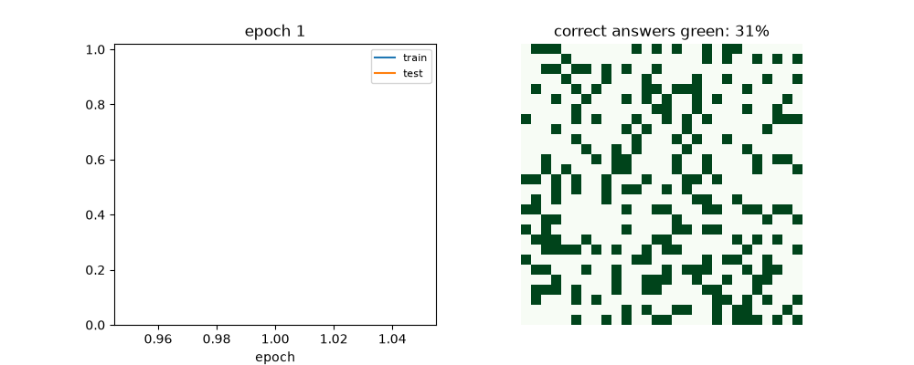
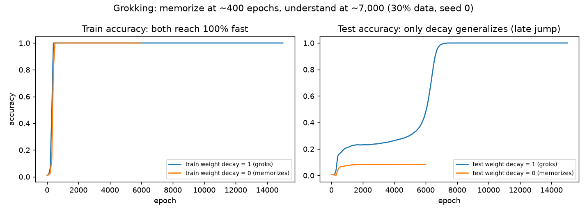
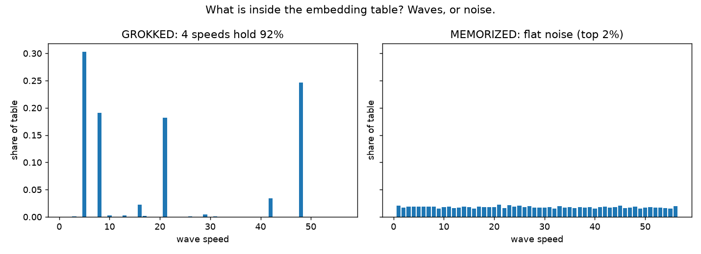
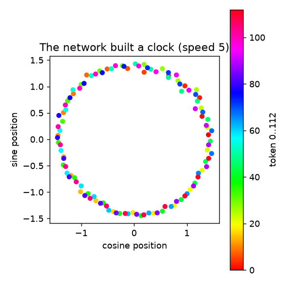
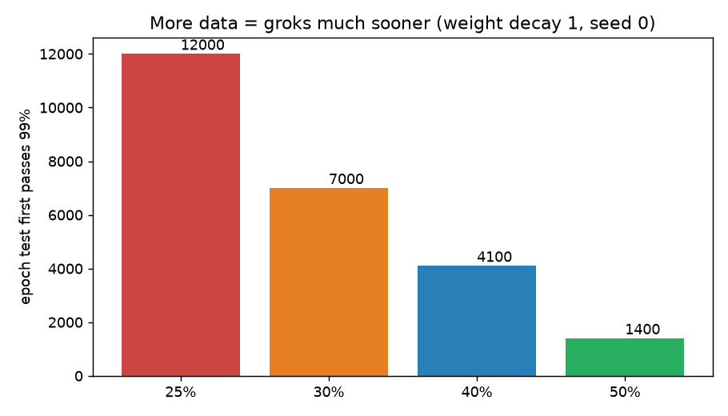

In 30 seconds: we teach a tiny neural network 3,830 clock additions. It memorizes them by step ~400 — and understands nothing else. We change one line (weight decay), keep training, and near step ~7,000 it suddenly scores 100% on 8,939 problems it never saw. Nobody added data. Nobody changed the code mid-run. The network traded its phone book for a clock. This page shows you the whole story — and lets you rerun every number.
MIT licensePyTorchDocker CPU+GPU227k params · hand-writtenP=113 · 12,769 problemsTests pass
Train accuracy hits 100% fast. Without decay, test sits near chance (~8%). With decay, it jumps to 100% — thousands of steps later.
92% in 4 waves
It builds circles
The grokked embedding is 4 sine/cosine waves. Plot any pair and 113 dots form a clock — never taught, discovered.
3 lines, 100%
A clock with no training
score(c) = Σ cos(wₖ(a+b−c)) — try every answer, pick the top. Perfect on all 12,769.
Δt ∝ 1/λ
A law you can use
Stronger weight decay → sooner grokking (λ=1→7k, λ=2→1.5k). More data helps more (50%→1.4k).
▶️Watch: the sudden jump (real training run)
Left: accuracy over time. Right: green = problems answered correctly (starts at the 30% it saw, ends fully green). Made from the actual results/grok_15k.json history — not a cartoon.
Video: the grokking run (seed 0, 30% data, decay 1). Prefer GIF? docs/demo.gif is the same animation. To add your own YouTube walkthrough: upload, then replace this <video> with the YouTube embed — the README shows the one-line snippet.

GIF fallback (renders inside GitHub READMEs, where <video> tags are stripped).
🌱Beginner guide — read this and you are dangerous
You will know more than most interview candidates. Let's work this out in a step-by-step way to be sure we have the right answer.
1 · The clock. Our clock has 113 hours (0–112). 100+50 isn't 150 — it wraps past 113 to 37. In Python: (100+50) % 113 == 37. Every pair (a,b) is one cell in a 113×113 table; color = answer. Diagonal stripes = the rule.
2 · The hiding game. We shuffle all 12,769 cells, show the net 3,830 with answers (train), hide 8,939 (test). Two ways to ace train: learn the rule, or memorize like a phone book. Test tells them apart.
3 · Tokens, not digits. The net never sees "37 comes after 36". Each number is just sticker #37, plus sticker #113 for "=". Three stickers in, one answer out of 113.
4 · The tiny machine. Look up each sticker's 128-number list → gather clues at "=" with 4 attention heads → think with 512 neurons (negative→0) → score 113 answers, pick the top. Untrained: guesses ~1/113 right.
5 · School: guess → measure → nudge. Run all 3,830 at once; turn scores into probabilities; penalty = −log(probability of right answer); PyTorch points each weight toward lower penalty; Adam steps that way. Repeat. By ~400 rounds: 100% on seen, ~8% on hidden. A phone book.
6 · The one line: weight decay. After each step, shrink every weight ×0.999. Useless weights melt to zero; needed ones get pushed back up. Now two forces: get train right vs do it small. Memorizing thousands of answers is big. A few circles is small. Same train score — smaller weights win. Test jumps to 100% near step ~7,000.
7 · Open it up. A column of the embedding table, top to bottom: memorizer = noise; grokker = smooth waves. Four wave-speeds hold 92%. Cosine+sine of one speed = a circle. Adding on a circle is just turning — wrapping costs nothing. The last table reads answers by "turn back by c; biggest cosine wins". Delete the 4 waves → 1% (blind). Keep only them → 99.7%. That's understanding, verified.
📊Evidence (every number runs)

Both nets memorize fast. Only decay generalizes — late and suddenly. (results/grok_15k.json vs mem_only.json)

Embedding spectra: 4 speeds dominate the grokker; the memorizer is flat noise.

One cosine+sine pair → all 113 tokens in order, evenly spaced. A self-built clock face (speed 5 in seed 0; other seeds pick other speeds — always 3–5 of them).

More data → much sooner: 25%→12k, 30%→7k, 40%→4.1k, 50%→1.4k epochs to 99% test.
This file isdocs/preview.html — publish it below and share one link.
🧑💻User stories — what you can use this for
Students: first transformer you can hold in your head — train it on a laptop GPU in ~1 min, watch memorization vs understanding split in real time. Interview prep: explain attention, weight decay, Fourier features, and ablations with live plots instead of slogans. Researchers: a 60-second fruit-fly for grokking hypotheses (priors, topology, FSD precursors, outlier breakdown) with JSON histories to mine. Teachers: assign "change + to −; predict the grok epoch" (answer: needs ~2× data; symmetry matters) or "find the spare 4th speed". Teams evaluating generalization: copy the keep/remove ablation pattern onto your own embedding tables. Skeptics: run the market control — see exactly where the magic stops.
🚀Try it (copy-paste, verified)
pip install -r requirements.txt
python3 -m src.task # 12769 problems, 3830 train / 8939 test
python3 -m pytest tests/ -q # 3 passed
python3 -m src.train --epochs 6000 --wd 1.0 --frac 0.3 --seed 0 --out results/demo.json
python3 -m src.realdata # market control (labels its source: live or fallback)
docker compose up --build grokking-cpu # full repro, no local env needed
Website is live:https://m0-ar.github.io/grokking-clock-benchmark-2026/preview.html (owner setting: Settings → Pages → Deploy from a branch → branch main → folder /docs). Root mirrors (preview.html, index.html) mean /, /preview.html and /docs/preview.html all resolve under either source setting. Share that link — readers get this beautiful version.
MIT — use it for classes, interviews, papers. If it helps, cite the repo plus Power et al. 2022 (arXiv:2201.02177) and Nanda et al. 2023 (arXiv:2301.05217). Full BibTeX in README + CITATION.cff.